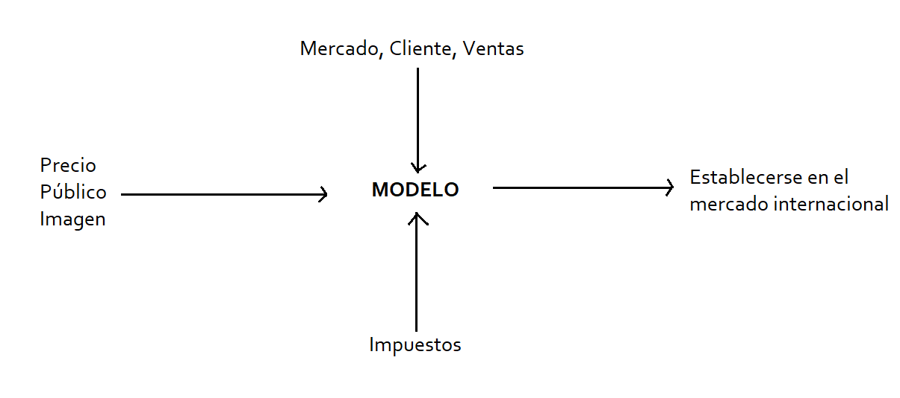

Consigna: - Construya un modelo de decisión identificando las
variables de decisión, exógenas, medidas de desempeño y cualquier
politica o restricción para este problema explicando claramente porque
las considera dentro de cada ítem. - Grafique las relaciones entre las
variables identificadas en el punto anterior.
Como venimos haciendo con los trabajos anteriores, antes de arrancar
tenemos que saber de qué estamos hablando, en este caso me voy a
detener en tres puntos, los modelos y las
variables de decisión y exógenas.
Primero definamos modelo que no es otra cosa más que una
representación de la realidad. Para lograr dicha representación uno
debe tomar variables que ayudan a desarrollar el mismo, y estas son:
variables de decisión que su ocurrencia o no depende del
decisor.
variables exógenas su ocurrencia o no escapa del alcance del
decisor.
Ahora que refrescamos estas definiciones podemos entrar al caso mucho
mejor.
Lo primero que se pide es identificar las medidas de desempeño, que en
este caso es establecerse en el mercado internacional o siendo
un poco más específico, exportar vino a Estados Unidos. ¿Por qué es
una medida de desempeño? porque en este caso en particular es el
objetivo que tiene la empresa.
Después con este objetivo ya planteado podemos identificar ambos tipos
de variables.
Por un lado las variables de decisión:
Imagen del producto, que se refiere a él como la empresa decide
vender el producto (en este caso su vino), es ese valor diferencial
que tiene que estar presente, se considera variable de decisión ya que
la empresa elige enteramente las formas.
Precio del producto, otro ítem de decisión porque la propia
empresa es quien decide el precio.
Público al que apunta, se puede entender también como la
estrategia de marketing para el tipo de persona al que está dirigido
el producto, también es algo que decide la empresa.
Por otro lado tenemos las variables exógenas:
Cliente final, si bien mi producto puede estar enfocado a un
tipo de persona, el cliente como tal puede llegar a ser otro
completamente distinto y esto escapa de las decisiones empresariales.
Ventas, algo que no controla la empresa es la cantidad de
ventas que tienen o tendrán.
Mercado, en este punto entra tanto, el como le va a su
competencia, el como encara cada competidor su producto, sus
estrategias de marketing, su precio y dentro de todo esto decimos que
el mercado como tal escapa de las decisiones de la empresa.
Dentro de las políticas y restricciones podemos encontrar:
Impuestos, tanto en la propia explotación como en el producto en sí.
Restricciones etarias, en este caso concreto al ser una bebida
alcohólica, existen políticas de cada territorio a las que la empresa
tendrá que adaptarse.
